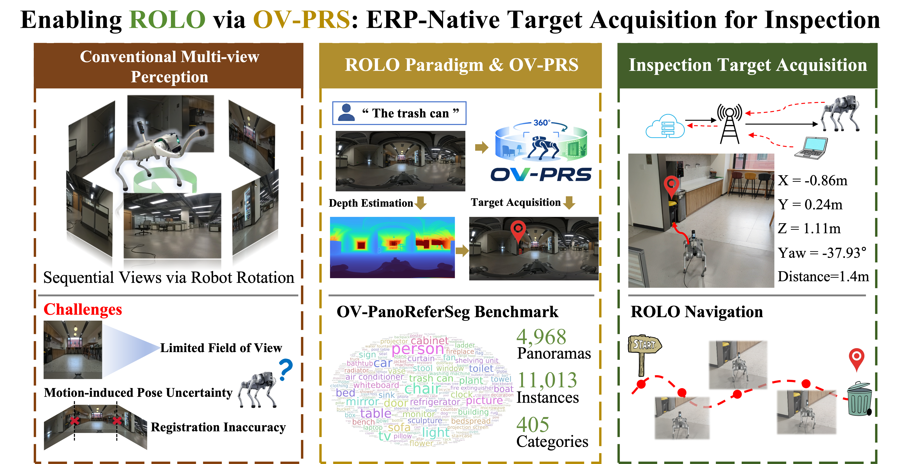
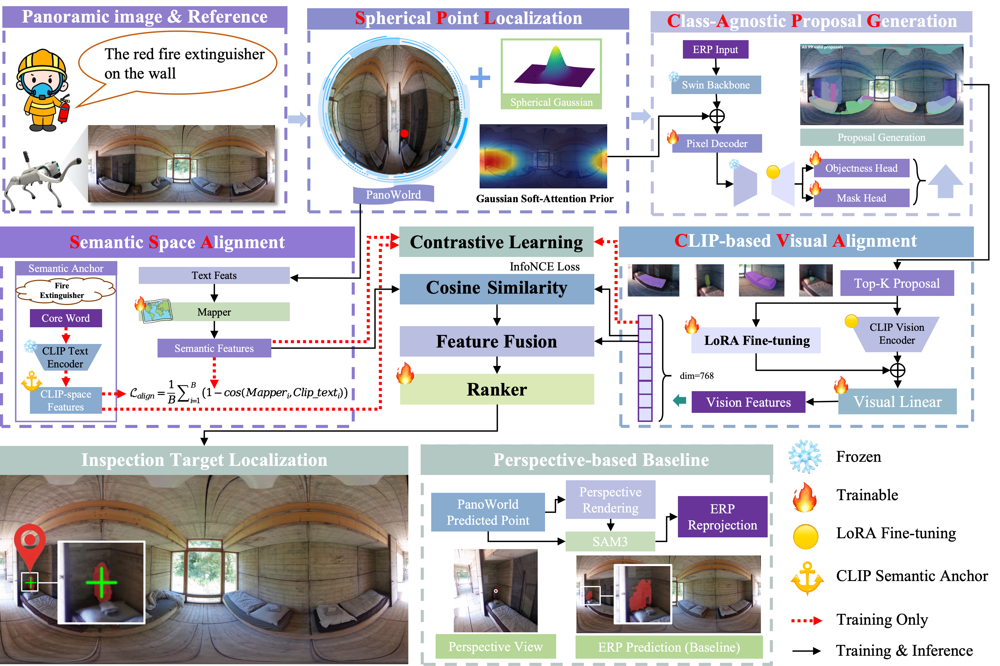
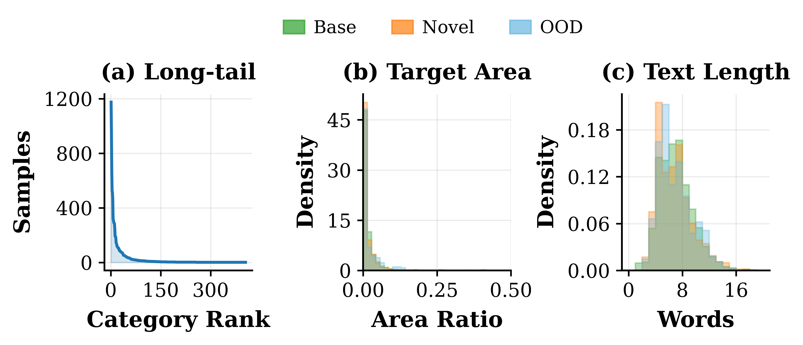
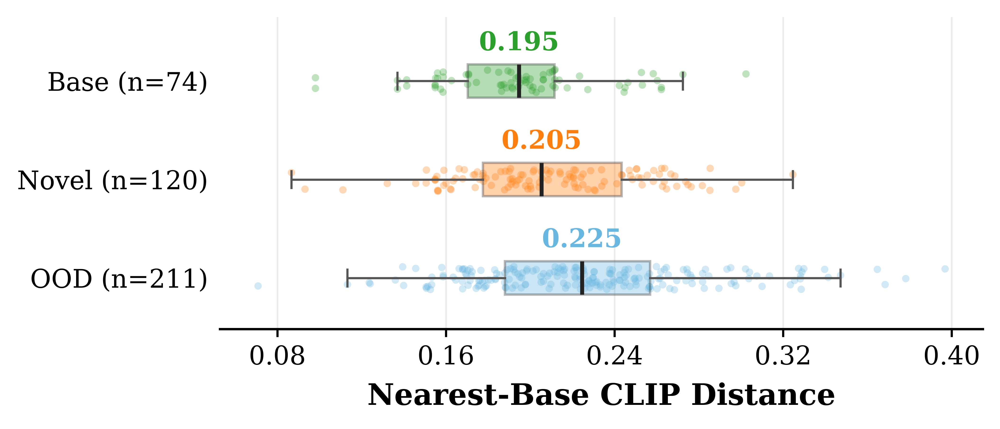
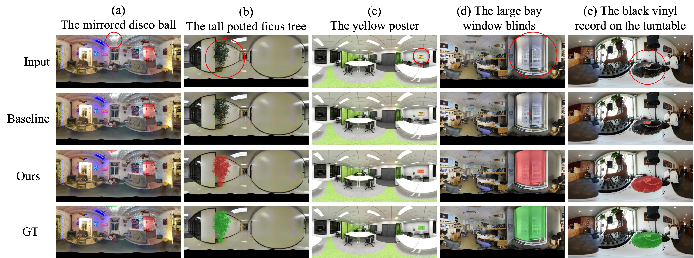
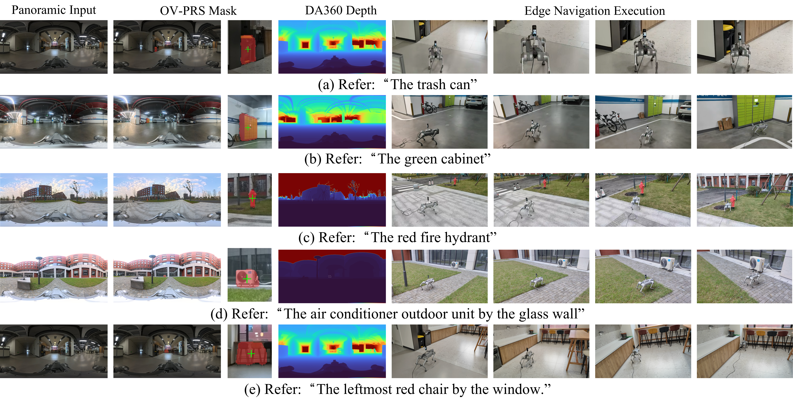

Point-guided proposals
PanoWorld predicts a spherical point. A wrap-around Gaussian prior and multi-layer features guide Mask2Former’s candidate masks.
A robot that sees the full scene can ground a language instruction before it moves. Robot Only Looks Once (ROLO) asks the robot to find a target visible in its initial 360° equirectangular panorama. OV-PRS predicts a pixel-level mask for the referred instance. The mask and panoramic depth then provide an approximate 3D location for inspection.

A Unitree GO2 EDU with an Insta360 X4 grounds language prompts and approaches inspection targets in indoor and outdoor scenes.
OV-PRS keeps mask proposals in ERP coordinates and uses both language context and region appearance to identify the intended instance.
PanoWorld predicts a spherical point. A wrap-around Gaussian prior and multi-layer features guide Mask2Former’s candidate masks.
A learned mapper projects panoramic language context into CLIP space. A second path encodes each candidate region.
A lightweight ranker scores candidates using semantic similarity, mask geometry, point correspondence, and proposal confidence.

Pixel-level annotations pair ERP panoramas with natural-language references. Category-disjoint Base, Novel, and OOD partitions measure generalization to unseen and rare categories.


OV-PRS improves on PanoWorld+SAM3 across all three splits. The harmonic mean of Base and Novel instance IoU rises from 0.5552 to 0.6305.
| Method | Base | Novel | OOD | HB,N |
|---|---|---|---|---|
| PanoWorld+SAM3 | 0.6219 | 0.5014 | 0.3967 | 0.5552 |
| DETRIS | 0.6352 | 0.1866 | 0.2352 | 0.2884 |
| OV-PRS | 0.7554 | 0.5410 | 0.4695 | 0.6305 |

ROLO combines the predicted mask with panoramic depth to localize the target for onboard navigation. In five trials the robot reached all targets, and four were uniquely segmented.
